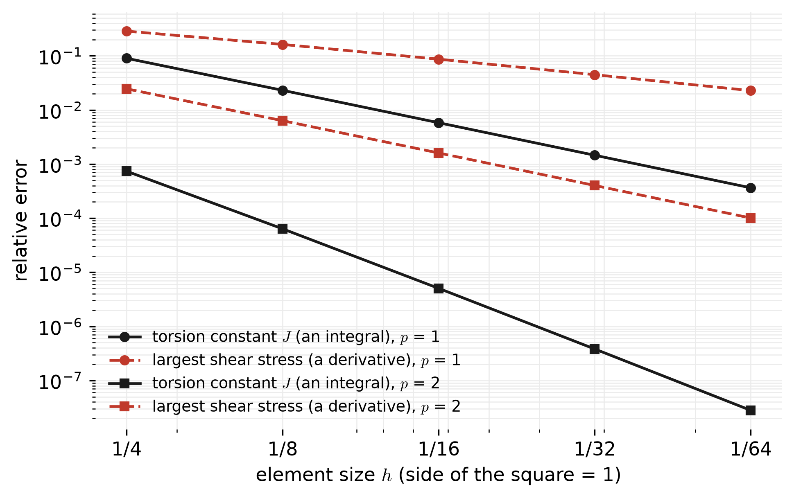

24 Class 24: Applications and Interpretation
One equation in many fields: setting up a problem, choosing what to compute, and checking the result
Every problem in this course so far has used the same boundary value problem, the Poisson Equation, with different interpretations. Heat conduction has been the running example, but the same equation describes many other physical problems, in which the unknown, the coefficient, and the boundary conditions have different names and meanings. This class describes how to recognize such a problem, set it up for a solver, decide what to compute from the solution, and check that the result can be trusted. Five application pages accompany it, listed in Table 24.1, and each follows the same structure: the physical problem, the governing equation, the boundary conditions, the solution, the quantities of interest, checks, and the limits of the model.
| page | the problem | quantities of interest | finite element points it illustrates |
|---|---|---|---|
| Seepage under a dam | water flowing beneath a concrete dam with a cutoff wall | seepage rate, uplift, exit gradient | a slit in the mesh, reactions, a second solve for the stream function, anisotropy, a singular corner |
| Torsion of an I-beam | shear stresses in a twisted steel beam | torsion constant, shear stresses | a domain integral, a re-entrant corner, a benchmark with an exact solution, the membrane analogy |
| Pressurized membrane | a tensioned film with a rigid boss in a pressure sensor | deflection (sensitivity), force on the frame | a rigid region with one shared unknown, the relation to torsion |
| Diffusion through a liner | contaminant passing through a tear in a landfill liner | mass flux, effective width of the tear | mixed conditions along one face, a one-dimensional limit, an exact solution |
| Heat flow in a battery cell (appendix) | heat generated in a battery cell during fast charging | temperatures, heat flux into the cooling plate | the strong form in two dimensions, in detail |
24.1 The Poisson Equation
The problem solved throughout this course, with the Robin conditions of Class 22, is: given \(f\), \(g\), \(h\), \(\hat{a}\), \(\hat{c}\), and a symmetric positive definite \(\underline{\underline{\kappa}}\), find \(u\) such that
\[ \left\{ \begin{aligned} -\nabla\cdot\left(\underline{\underline{\kappa}}\nabla u\right) &= f && \text{in } \Omega\\ u &= g && \text{on } \Gamma_g\\ \left(\underline{\underline{\kappa}}\nabla u\right)\cdot\underline{n} &= h && \text{on } \Gamma_h\\ \hat{a}\,u + \left(\underline{\underline{\kappa}}\nabla u\right)\cdot\underline{n} &= \hat{c} && \text{on } \Gamma_r \end{aligned} \right. \]
The equation states a balance: \(-\underline{\underline{\kappa}}\nabla u\) is the flux of a conserved quantity, and the net flux out of any small region equals the amount \(f\) produced inside it. Fields differ only in what is conserved, what drives the flux, and what is held fixed at the boundary, as listed in Table 24.2 and Table 24.3.
| field | unknown \(u\) | coefficient \(\underline{\underline{\kappa}}\) | source \(f\) | flux \(-\underline{\underline{\kappa}}\nabla u\) |
|---|---|---|---|---|
| heat conduction | temperature (K) | thermal conductivity (W/(m·K)) | heat generated (W/m³) | heat flux (W/m²) |
| groundwater seepage | total head (m) | hydraulic conductivity (m/s) | water injected (1/s) | Darcy flux (m/s) |
| electrostatics | electric potential (V) | permittivity (F/m) | charge density (C/m³) | electric displacement (C/m²) |
| torsion of a bar | Prandtl stress function (N/m) | 1 | \(2G\theta\) (N/m³) | shear stresses, rotated by 90° |
| tensioned membrane | deflection (m) | membrane tension (N/m) | pressure (Pa) | the vertical force carried by the membrane (N/m) |
| diffusion of a contaminant | concentration (kg/m³) | \(nD\): porosity × diffusion coefficient (m²/s) | mass produced (kg/(m³·s)) | mass flux (kg/(m²·s)) |
| field | Dirichlet: \(u = g\) | Neumann: \((\underline{\underline{\kappa}}\nabla u)\cdot\underline{n} = h\) | Robin |
|---|---|---|---|
| heat conduction | a surface held at a known temperature | a known heat flux, or insulation (\(h = 0\)) | convection to a fluid |
| groundwater seepage | the floor of a reservoir or river (known head) | an impermeable surface (\(h = 0\)) | a leaky layer with known resistance |
| electrostatics | a conductor at a known voltage | a plane of symmetry, or a known surface charge | a conductor covered by a thin dielectric layer |
| torsion of a bar | the free surface of the bar (\(\phi = 0\)) | a plane of symmetry (\(h = 0\)) | (does not occur) |
| tensioned membrane | the edge held by a frame | a free edge on a frictionless guide | an edge on a spring support |
| diffusion of a contaminant | a source or sink at known concentration | an impermeable barrier (\(h = 0\)) | mass transfer into a flowing fluid |
Two warnings follow from these tables. First, the symbols of other fields collide with those of this course, such as \(h\) for the total head in groundwater flow and \(G\) for the shear modulus in torsion, so each application page states its mapping explicitly. Second, the Neumann data \(h = (\underline{\underline{\kappa}}\nabla u)\cdot\underline{n}\) is the flux into the domain, while many fields report outward fluxes as positive, so it is worth writing the physical law for each boundary in this form before entering any numbers; a sign error here gives a solution that looks plausible but is wrong.
24.2 From a physical problem to a model
Each of the following decisions should be stated when the results are reported.
- State the assumptions. The equation is steady, linear, and, in these pages, two-dimensional. A two-dimensional model describes a body that is long in the third direction, with conditions that do not vary along it, such as a dam, a beam, a transmission line, or a liner, and its results are per unit length.
- Divide the boundary. Every point of the boundary needs exactly one condition. When the physical domain is very large, such as the ground beneath a dam, the artificial boundaries of a truncated domain need a condition whose influence is then checked.
- Use symmetry. A plane of symmetry carries no flux, which is the natural condition \(h = 0\), so the edge of a reduced model is simply left alone. Three of the four new application pages model a half or a quarter of the domain.
- Scale. Since the problem is linear, it is often simplest to solve a normalized problem, such as torsion with \(2\) in place of \(2G\theta\), or electrostatics with a potential of 1 V, and scale the result afterwards.
- Place the mesh. Element edges should lie along material interfaces and end where the boundary condition changes type, and the mesh should be refined toward corners and toward such changes, where the solution is not smooth.
24.3 What to compute: quantities of interest
The solution \(u^h\) is frequently not the final answer. A decision usually depends on a few numbers derived from it, called quantities of interest, which are computed in different ways and have different accuracy.
- Values of \(u\), at nodes or from the basis functions, are the most accurate quantities the method produces.
- Gradients and fluxes at points are one order less accurate (Class 16, Class 17), and are discontinuous between elements, so they are usually averaged at the nodes for plotting.
- Fluxes through a boundary can be integrated along element faces with the face quadrature of Class 20. On a Dirichlet boundary, they are better computed from the reactions, using the rows of the full stiffness matrix that were removed before solving, \[ R_A = \sum_B K_{AB}\,u_B - F_A \qquad \text{for each node } A \text{ on } \Gamma_g . \] Each \(R_A\) is the share of the boundary flux \(\int_{\Gamma_g} N_A\,(\underline{\underline{\kappa}}\nabla u)\cdot\underline{n}\;d\Gamma\) that belongs to node \(A\), so the sum of the reactions is the total flux. It is usually much more accurate than the integral of the computed gradient, because it is computed in the same way as the equations that were solved.
- Integrals over the domain, such as the torque carried by a twisted bar, use the same quadrature that built the stiffness matrix.
- The energy \(\tfrac{1}{2}\,\underline{d}^T\underline{\underline{K}}\,\underline{d}\) of Class 23 is itself a quantity of interest in some fields, such as electrostatics, where it gives the capacitance.
Figure 24.1 compares an integral and a derivative for the torsion of a bar with a square cross-section, which has an exact solution (see the torsion page). The torsion constant is an integral of \(u\), and the largest shear stress is a value of \(|\nabla u|\) at the middle of a side.

The integral converges at twice the rate of the derivative, which is typical: quantities that average the solution over a region converge faster than quantities read at a single point, so an integrated quantity is usually the better choice when one is available.
24.3.1 Singular points
The exact gradient is infinite at re-entrant corners (where the boundary turns into the domain, such as the inside corner of an L-shape), at the tip of a thin wall or plate, and where a Dirichlet boundary meets a Neumann boundary on a straight edge. Each application page contains such a point: the toe of the dam, the inside corner of the I-beam, the corners of the boss on the membrane, and the edge of the tear in the liner. There, the computed gradient does not converge but keeps growing as the mesh is refined, as described in Class 17. This is a property of the mathematical model, not an error in the code, and in reality it is limited by details that the model leaves out, such as the radius of a fillet or the thickness of a strip. The gradient at such a point should not be reported; instead, a quantity that averages over a region of finite size should be computed, with the mesh graded toward the point so that the rest of the solution is not degraded.
24.4 Checking a result without an exact solution
Most problems of practical interest have no exact solution, but a result can still be checked.
- Global balance. The total flux into the domain, using the reactions on the Dirichlet boundaries, plus the total source \(\int_\Omega f\,d\Omega\), is zero to roundoff for a correctly assembled system, so a failure points to an error in assembly or in the boundary conditions.
- Symmetry. A symmetric problem should have a symmetric solution.
- Limiting cases. An extreme value of a parameter often gives a known answer, such as a Robin coefficient tending to zero, a cutoff wall of zero depth, or a defect as wide as the domain.
- A simpler problem with a known answer. A rectangle, a deep foundation, or a one-dimensional version of the problem, solved with the same code and mesh density, tests the whole process.
- Refinement. The change in the quantity of interest between \(p = 1\) and \(p = 2\), or between two meshes, estimates its accuracy.
- Truncation. Enlarging an artificially truncated domain should change the quantity of interest by much less than the required accuracy.
- Physical sense. Signs, magnitudes, and units should be plausible: heat flows from hot to cold, water flows from high head to low head, and a stress should be of a plausible size for the load.
24.5 Interpreting and reporting a result
A quantity of interest is only useful if it is interpreted, and a report should give:
- the value, with units and an estimate of its accuracy, for example from the change between two levels of refinement;
- a comparison with a criterion, such as a factor of safety, a design target, an allowable stress, or a regulatory limit;
- the dependence on the inputs, since in a linear problem some results are proportional to an input while others do not depend on it at all; for example, the seepage under a dam is proportional to the hydraulic conductivity of the soil, which is often uncertain by an order of magnitude, but the uplift on the dam does not depend on it when the soil is uniform;
- dimensionless forms, such as the Biot number of Class 22, a shape factor, or an effective width, which allow a result to be applied to other sizes of the same problem; and
- the limits of the model, that is, what the model leaves out and how that could change the conclusion.
24.6 Summary
- Heat conduction, groundwater seepage, electrostatics, torsion, membrane deflection, and diffusion all lead to the same boundary value problem, with different names for \(u\), \(\underline{\underline{\kappa}}\), \(f\), and the boundary conditions.
- Setting up a model involves stating the assumptions, dividing the boundary, using symmetry, scaling, and placing the mesh, and each decision should be reported.
- Integrated quantities and reactions are more accurate than gradients at points, and gradients at singular points should not be reported at all.
- Results can be checked by balance, symmetry, limiting cases, simpler problems, refinement, and truncation, and should be reported with their accuracy, a criterion, their dependence on the inputs, and the limits of the model.